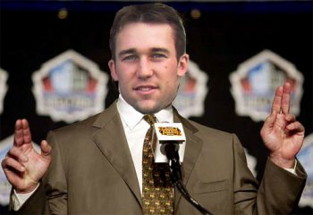

The Latest Headlines from
Cork Bowl 19
Cork Bowl 19
Teams Announced
September 15th - The Cork Bowl league
office has officially released the rosters and game date for the 19th edition
of the game. The game will be played at Corklestick Park on Saturday, December
5th and will pit the Fossas against the Capybaras. A plethora of storylines
headline this year's game, starting including the return of a familiar face,
a new quarterback who wasn't planning on playing at all and the retirement
of an all-time great. The Fossas will be led by quarterback Willy Truitt
who will be throwing to Robert Trimble, Brooks Wilson, Josh Williamson,
Evan Woodard and Jake Hoalt. They will be taking on the Capybaras who will
have Jeff Henney at quarterback. Henney's receivers will be Patrick Cork,
Greg Howard, Chris Cork, Kevin Ryan and Ryan Tomlinson.
Ryan Tomlinson has missed the past
two games, but plans to return to the field for the first time since Cork
Bowl 16 for the Capybaras. "We still aren't sure is he's actually going
to be there," commented Commissioner Patrick Cork. "For those
that don't know him, R.T. has a tendency to say a lot of things that don't
happen, but he's given the league confirmation from his agent that he is
playing. I guess we'll find out in a few months if it's true." Tomlinson
tried to calm all fears at a recent press conference. "I'm a man of
my word," said Tomlinson. "If I say I'll be there, I'm going to
be there....probably."
Another positive note is Jeff Henney's
announcement that he will also play in this year's game. Henney, who has
been a star in all five Cork Bowls he has played, was expecting to be overseas
this fall which would have ended his three-year run of consecutive Cork
Bowls. However, the plans have been pushed back to the start of 2010, and
Henney will be playing at least one more game before moving on. And he'll
be playing a new position in this year's game, as he will be handling the
quarterback duties for his team. "Not only do I get to play this year,
but I get to do something I've always dreamed of - play quarterback in Cork
Bowl," remarked an excited Henney. "I've been itching to show
what I can do with my arm since my first game. I can't think of a more exciting
way to be a part of this year's game."
The one piece of bad news is the imminent
retirement of veteran Reggie Truitt. Although Truitt has yet to officially
retire, all sources within the league have confirmed it's just a matter
of time for the 14-year player. "He'll make the announcement when he
feels the time is right," stated an emotional brother Willy Truitt.
"He doesn't want to take any of the attention away from this year's
game, so he's going to do it sooner rather than later. Hopefully the media
will respect him enough to give him some time to make it right." Truitt,
who has been hampered by a degenerative back condition was able to quarterback
for his team last year, but a handful of plays on the defensive side of
the ball proved to be too much, and it appears Truitt will be moving on.
The late start date could lead to
some weather issues as well. The last time the game was played in December
was Cork Bowl 15 when the field was covered in 5 inches of snow. "It's
always a risk when you push the game into December, but if we were going
to have all the players here, that was the best option this year,"
added Commissioner Cork. "Mother Nature has been very kind to us most
of the years, so hopefully this year will be no different."
As for the matchups, on the surface
it would appear as if the defenses may have the upper hand this year. With
Henney and Willy Truitt at the quarterback positions, the two of them will
be fresh on defense and should be able to help take away a top target for
the opponent. "When you look at the matchups, it looks like it's going
to be a lot harder to move the ball consistently this year," said Willy
Truitt. "Usually you can see a couple matchups that you can take advantage
of, but it's going to be really hard to find open guys with these two defenses.
It would be a nice change of pace if the defenses were in control of the
game as opposed to the offenses." ;
Back to top
Reggie Truitt
Announces Retirement After 14-Year Career
September 19th - Cork Bowl veteran
Reggie Truitt has opted to call it a career on the field of Corklestick
Park effective immediately, citing a degenerative back condition. Truitt,
a six-time Cork Bowl Champion walks away with one MVP award (CB 12) and
as the active defensive leader in tackles (121), interceptions (13), and
interceptions returned for touchdowns (3). He was no slouch on the offensive
side of the ball either, splitting time at the QB and WR positions. In 11
games at the WR position, he notched 79 receptions and 26 touchdowns. From
seven games at QB, Truitt posted 230 career completions, a 58-percent completion
percentage, 83 touchdowns, and four rushing touchdowns. His CB touchdown
total on both sides of the ball is an amazing 117 for an 8.35 TD per-game
average. The statistics only tell half the story for Truitt, as it was his
heart and soul, gritty determination, and somewhat freaky game instincts
that separated him from many of his CB peers. 
“Cork Bowl comes down to big
plays every year, and Reggie had a ton of them,” said Patrick Cork
in 2002, referencing Truitt’s five interceptions on that MVP day. “He
covered a lot of field and always seemed to be at the right place at the
right time.”
“Reggie made plays when they
mattered most,” commented announcer Eric Dean, when contacted by phone
early this morning. “That is how he should be remembered on the field,
affecting the outcome of games. Cork Bowl is losing a gamer today, a true
throw-back type player.”
“He’s always been a top-notch
player, but his teams often let him down late in games that cost him more
CB championships,” offered Hall of Famer Kirby Newell. “I will
say he seemed to get better and more determined with age, maybe he knew
his clock was ticking.”
The Cork Bowl history books will also
remember Truitt as the man who brought complex defensive schemes to the
league in 2001 and 2002. His blitz-heavy defenses were so tough, it’s
thought in some circles as the sole reason for the defensive rushing ban
implemented by the league in 2003. “It’s no secret that his defenses
slowed the game down and our TV numbers suffered,” noted Cork Bowl
commissioner Patrick Cork. “But, the fact is the ban was done in the
name of safety, and to bring a legend back onto the field – namely
Kirby Newell’s return in 2003. Reggie was not the reason for the ban,
but his schemes were very successful, yes.”
Truitt is proud of his legacy, but
isn’t comfortable with all of the hoopla. “It is unfortunate that
my playing career has come to a slow close like this,” said an emotional
Truitt. “I just want to thank my peers who I lined up with and against
over the past two decades. I want to thank them for their passion, dedication,
and overall energy for this game. I wouldn’t have been able to reach
the milestones I have without their commitment. More than anything, I’m
going to remember the battles. I’m going to remember the years of lining
up against Patrick Cork, teaching Greg Howard how to pursue and execute
on defense, and playing with and against my brother. But on a bright note,
let’s focus on this year’s game and the talent on the field.”
Younger brother Willy Truitt is sad
to see his brother’s playing days come to an end, but sees the need.
“It is too bad Reg can’t stay out there with us, keep proving
he is one of the best. I’ll miss going over game plans with him, but
I won’t miss playing against him. On defense, he was a quarterback’s
worst nightmare. His health comes first,” reasoned Willy. “He
has a wife and two dogs to care for, so he’s got to look at the big
picture. I’m proud of him.”
So what comes next for Reggie Truitt,
now that his playing days are over? “I’m working on some things
with the league,” he said. “Nothing that I can announce today,
but I think you’ll see me stay involved at numerous levels. I love
this game, so I’m sure I’ll continue to do my part to promote
it.” Commissioner Patrick Cork is eager to finalize those plans. “We
would love to have Reggie find a long term home in the league offices. The
marketing folks are looking into what makes the most sense for the league.
We always want to keep our legends around, that is what the fans want –
so it has to happen.”
Truitt is planning a fall retreat
with his family before he’ll announce a future role or meet with the
media for further comment. Officially, he is the current record holder of
defensive interceptions in a game (5, CB 12), and interceptions thrown in
a game (7, CB 7).
Cork Bowl 19 is set for Saturday,
December 5, at Corklestick Park. Check your local TV listings for programming
details.
Back to top
Henney and Willy
Truitt Make Interesting Quarterback Matchup
October 11th - While one quarterback
has established himself as the best in league history, the other one has
yet to throw a single pass in a Cork Bowl. But Jeff Henney's teammates aren't
concerned. "I learned long ago not to underestimate Jeff Henney,"
said veteran receiver Patrick Cork. "I think a lot of people doubted
him when he entered the league many years ago, and he was the MVP the first
game he played. I would expect nothing less than an MVP performance from
him no matter what position he's playing."
Fossas quarterback Willy Truitt's
numbers speak for themselves - 422 completions, 155 touchdown passes and
most importantly 7 Cork Bowl championships under center. And he'll have
an accomplished group of receivers that will help him pad those numbers
even more. Robert Trimble established himself as a #1 target last year with
17 catches and 6 scores, and veteran Brooks Wilson is all but guaranteed
to get 12-15 catches and 5 scores. Jake Hoalt, Josh Williamson and Evan
Woodard will give Truitt three underneath targets with great tackle-breaking
abilities. "You always like to have a history with your receivers,"
said Truitt. "Williamson and Woodard were on my team last year, and
I had arguably the best game of my career in Cork Bowl 16 with Wilson and
Trimble so I'm very comfortable with all my guys."
The more interesting quarterback story
will be Jeff Henney. Henney has established himself as one of the best receivers
in the game, but jumped at the opportunity to play quarterback in what may
be his final game before heading overseas later this winter. "It's
something you dream of as a kid growing up - having the ball in your hands
every play and having the game on your shoulders," said Henney. "I
love that pressure and I have no doubts I can lead my team to a win. This
game isn't about Jeff Henney vs. Willy Truitt - it's the Capybaras vs. the
Fossas. And I believe we have the better team. We'll see on December 5th."
Henney has a veteran group of receivers
that will try to take the pressure off him - at least the first few drives
of the game. "I'm sure there will be some butterflies being in a new
position," said Chris Cork. "But it's not like he doesn't know
what this game is about. We need to make sure we get him going early and
after that he'll roll." Brothers Chris and Patrick Cork will be joined
by fellow veteran receivers Greg Howard, Ryan Tomlinson and Kevin Ryan.
All five receivers for the Capybaras have at least 10 years of experience.
"There's no replacement for having been there and done that,"
said Tomlinson. "The veteran presence we have had in practice is amazing.
There is no learning curve, there is nothing that will surprise us. Jeff
Henney is a winner and he's going to show that once again this year."
Back to top
Ryan Tomlinson
Promises Triumphant Return
October 30th - Something was missing
the past two years at Cork Bowl, and that something was Ryan Tomlinson.
The 10 year veteran, who had played in all 10 Cork Bowls from 1997-2006,
was absent the past two winters. However, the highly popular player will
be returning to the Corklestick Park field this year and has promised he
won't disappoint his fans. "When you are away from the game for a couple
years, the only thing you can expect is to come back with a vengeance,"
said Tomlinson. "I don't plan on easing my way back onto the field
- I plan on being a force from the first snap."
Rumors swirled during the weeks leading
up to Cork Bowl 17 that Tomlinson was involved in ferret fighting and had
fled to Florida - where he has lived the past two years. But those rumors
were never confirmed and Tomlinson claims they were nothing. "I have
no idea where those rumors came from," reported Tomlinson. "It
was some urban legend that grew out of control. I was in Florida for business
purposes the past few years. That's all I have to say about that. Next question."
Tomlinson will likely find himself
matched up against third-year player Evan Woodard throughout this year's
game. Tomlinson, who has averaged a little over 5 1/2 catches per game over
the course of his career, plans to show the youngster what he's all about.
"He replaced me the first year I was gone so I've never had a chance
to play against him," said Tomlinson. "It appears I am on a completely
different level compared to this Woodard kid. He has 3 catches in two years??
Those are Justin Massey-like numbers. I've had some tough matchups over
the years, but it doesn't look like this year will be one of them."
Back to top
Reggie
Truitt to Announce Cork Bowl 19
November 3rd - After recently hanging
up the cleats following a brilliant 14-year career, Reggie Truitt will be
back at Cork Bowl 19 this year - but in a completely different position.
Truitt will be calling out the action from the booth instead of calling
out plays in the huddle. "It's definitely going to be a huge adjustment,"
commented Truitt. "To be on the field for all those years and then
to come back and not be out there is going to be hard. But I'm looking forward
to announcing for the first time. I'm just hoping the Cork Bowl Network
doesn't send me to the back of the endzone like Tony Siraguusa. And who
knows, maybe after a few years in the booth, I'll have the opportunity to
teach Greg Howard how to finish complete thoughts without stumbling all
over myself."
Truitt's knowledge of the game will
definitely come in handy in the booth, but he's not about to talk up his
own Hall of Fame career. "This is not an opportunity to tell the world
how great of a player I used to be," added Truitt. "I sure hope
Joe Morgan is reading this."
Truitt is the first to sign a deal
with Cork Bowl to announce Cork Bowl 19, however rumors have been running
rampant around the league that former great Kirby Newell could join Truitt
in the booth. "Obviously that would be a Dream Team like the game has
never before seen," said Truitt. "You're not going to find two
people more knowledgeable than me and the Flat Rock Rocket. And you better
believe that neither of us would hold anything back about any of the players.
I'm not gonna play favorites, and I know Kirby wouldn't either. I've been
trying to convince him to join me, but he's not committing to anything.
I'd love to have him up there, but I can bet that all 12 guys on the field
would be shaking in their cleats knowing the two of us were calling out
their every move. And yes, that includes you Greg Howard."
Other potential candidates to join
Truitt include Eric Dean, Jay Jared and Tony Cork. "I'm not expecting
myself to call the game as well as the legends, Eric Dean and Jay Jared,"
concluded Truitt. "However, I am going to go back and look at some
game film just to see if I can learn something from those two."
Back to top
Willy Truitt
Opens Up About Training/Pregame Rituals
November 5th - How do you train for
one game a year? A game broadcast across DVD players all across the midwest,
viewed live by at least a dozen, if not a baker's dozen. If you are the
Fossas QB Willy Truitt, the answer is, you don't.
That's right, you heard that right.
Truitt claims to not train at this veteran stage of his career. "I've
been through just about every scenario there is in this Cork Bowl arena,"
reasoned Truitt. "The old coach once told me, the arm only has so many
throws in it, so I see more value in conserving the rotator cuff at this
stage in my career."
So what's his secret? "I usually
just have Reggie stretch me out real good in the morning, take a little
jog at Corklestick Park to get the blood flowing. Following that, I'll pop
into Howard's locker for the good stuff, roll back out and start throwing
the ball around. I don't know what he's working with, but by game time,
it's like WHAM - let's roll!"
Can you imagine what Truitt's numbers
would be if he used regularly? "I've seen the case studies before,"
he says. "There is actually a reverse effect at some point. For Greg
Howard it was age 20, now he can't even touch his fingers together when
his arms are fully extended. Thus, the drops."
Back to top
Racy Photos
of Greg Howard Surface
November 14th - For years, the rumors
have run rampant about Cork Bowl veteran Greg Howard's....ummm....manliness.
And the flames were stoked this weekend when an anonymous investigative
reporter went public with some racy photos of Howard wearing women's clothing.
The photos caused a stir at Cork Bowl practices on Saturday as the teams were preparing for
the upcoming game - now just three weeks away.
"I'm shocked," said long-time
Howard friend Josh Williamson. "We've been close for a long time, and
I mean REALLY close, but I've never seen him wearing a dress. Now what I
have seen him do is....you know what, never mind. Let's just say I'm shocked."
"The only thing I'm shocked about
is how long it took for something like this to come out," fired Hall
of Famer Kirby Newell. "We've known something has been going on with
Greg for a long time. I would be willing to bet there are hundreds more
photos floating around out there and it's only a matter of time until they
are in the public too."
As for Howard's response to the whole
situation, he vehemently denied any questionable behavior. "It's freaking
Halloween! You can't tell me nobody else has ever dressed up as a woman
for Halloween. This is ridiculous. Everybody is just trying to bring me
down because I've become a star and this time they've gone too far. I'm
99% sure someone on the Fossas had something to do with this and they're
gonna pay on December 5th."
"I don't know why Greg is so
defensive about these pictures," added Willy Truitt. "If that's
who you are, just embrace it. It's not as if there weren't questions swirling
already - especially after the Santa shorts he wore to play in last year.
I mean seriously."
As for the league's response, Commissioner
Patrick Cork tried to steer clear of any controversy. "It's a picture.
Greg says it was a Halloween costume, so until we find some sort of evidence
that is was anything else, this is a non-story. I realize that the calendar
in the background of one of the pictures was on February, and there was
snow on the ground and Valentine's Day decorations up, but everybody knows
they have some crazy fall weather in northern Indiana and maybe the store
was having one of those "Valentine's Day in October" celebrations.
I've heard they are wildly popular nowadays. It's really hard to know anything
for certain."
Back to top
Possible
Milestones for Cork Bowl 19
November 16th - Following is a list
of potential milestone achievements to watch for in Cork Bowl 19:
Willy Truitt - 20 TD passes for 175;
28 completions for 450
Patrick Cork - 3 TD receptions for
80
Chris Cork - 3 catches for 150; 3
TD receptions for 60
Greg Howard - 9 receptions for 125;
3 TD receptions for 60; 3 tackles from all-time lead of 121 (Reggie Truitt)
Brooks Wilson - 11 receptions for
125; 2 TD receptions for 40
Kevin Ryan - 2 receptions for 100;
3 TD receptions for 40
Josh Williamson - 3 receptions for
75; 3 TD receptions for 25
Ryan Tomlinson - 4 TD receptions for
20
Robert Trimble - 6 receptions for
50
Back to top
Garrard Returning to Capybaras Coaching Staff
November 19th - He's baaaaaack. The name is well known around Cork Bowl, but Brian Garrard has been absent from the game since a stirring one-year return five years ago in Cork Bowl 14. Garrard, one of the game's founding fathers, played an integral part in the Dingoes 133-112 win in Cork Bowl 14, but virtually disappeared from the game immediately after. "I needed to get away from the game and focus on my family," stated Garrard in a Wednesday afternoon press conference. "Some players like to hang around the game and have trouble letting go, but I needed a clean break. But my absence didn't mean I was done with Cork Bowl - it was always on my mind, but until now I didn't feel like I needed to be involved."
But Garrard will be involved once again as he was named the offensive and defensive coordinator for the Capybaras. "Our team has really been struggling in practices recently and we had a team meeting to discuss what needed to be done," commented veteran leader Chris Cork. "Someone brought up the possibility of bringing in someone from the outside to put us over the edge and there was only one name that was discussed. Unfortunately Bill Walsh is dead, so we went with Garrard."
Garrard is no stranger to the sidelines - having coached the Grisons to victory in Cork Bowl 13. "You look at the makeup of those Grisons and this year's Capybaras and they're virtually identical," stated Garrard. "That team had Howard, both Cork brothers and Kevin Ryan. The only changes are Henney at quarterback and Tomlinson at receiver. We had a ton of success that year and we are comfortable working together. There is no learning curve for any of us. These guys have been great and I expect nothing less than another outstanding effort in two and a half weeks."
With the dramatic coaching change taking place less than three weeks before the game, many critics wonder if there is enough time to overhaul both sides of the ball. "To be honest, we haven't done much in practice for the past two months," said Tomlinson. "Henney has thrown some passes and we have watched a lot of game film and that's about it. Frankly, none of us other than Greg have done anything athletic for months and we don’t want to risk the chance of injury by preparing too hard, so we should be fine."
Garrard is especially looking forward to taking down Brooks Wilson. "After all the beaks, traps and lats that guy gave me in junior high and high school, to embarrass him on a national stage would be sweet," added Garrard. "I haven't decided if I'm going to be down on the field with the guys or up in the booth. The last time I coached that wasn't an option because that was before the field was flipped. I'm a little concerned he's going to "accidentally" fly over to the sidelines to make a play and try to take me out. I wouldn't put it past him. Hopefully my mere presence will be enough to mess with his head. We all know he's not very mentally strong and there's a good chance he'll be distracted trying to think of a way to cheapshot me that he'll lose focus on the game itself."
Back to top
Super Fan Akeya Harper Hoping to Return to Cork Bowl
December 3rd - Of all the news surrounding Cork Bowl 19, the most exciting news was the developing story circulating across the wire Thursday night regarding the potential return of super fan Akeya Harper. Harper was the face of Cork Bowl fans for half a decade for Cork Bowls 9-13. However, Harper's emotional press conference on the eve of Cork Bowl 14 announcing that she would not be attending was the last time Harper was seen in the national spotlight. Word got out Thursday night, however, that the long-time fan was planning on attending Cork Bowl 19 on Saturday. "I feel it's time to make it back to the place that was the center of so many great memories of my young adulthood," commented Harper. "It's been too long. Saturday can't get here soon enough. I've heard the guys are a little older and a little slower, but frankly, they weren't that fast or athletic to begin with."
"We just haven't been able to find that next super fan since she left," beemed Commissioner Patrick Cork. "The number of people we have coming to games has slowly grown, but nobody has approached the enthusiasm that Akeya has for the game. I can't think of anyone else that has had such an impact on this game without ever having played a down. The "Cork Bowl Fans Hall of Fame" will officially be debuted on Saturday and Akeya Harper will be the centerpiece."
Back to top
Back to Cork Bowl 19 |